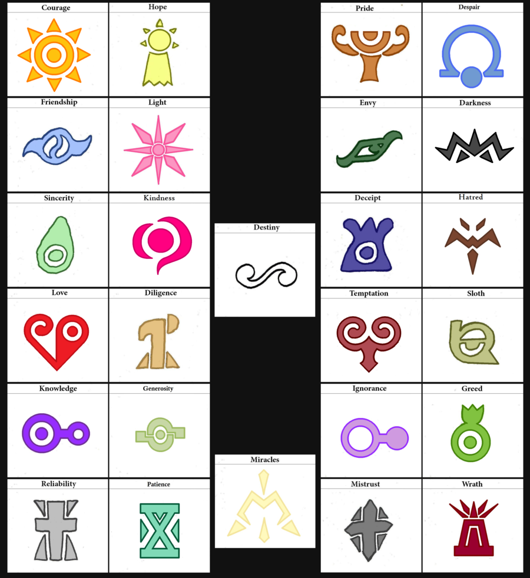

Worldbuilding as a Daily Practice
Keywords: Worldbuilding, Tactics, Co-opting, Creative Resistance, Personal Systems, Daily Practice, Late Capitalism, Neue-Futurism
Art, Poetry and Worldbuilding
During my time at RISD, I was fortunate to be immersed in an environment where artists from all of the different creative fields gathered around. It thus became a hobby of mine to observe how the different creators created—what their personal practices were, and where their inner systems of logic came from.
It quickly occured to me that all different forms of creations—poems, paintings, sculptures, films, and many other more— are in essence the same, which are fundamentally structured around the concept and act of “worldbuilding”. Ian Chang defined a “world” as “a reality that (one) can believe in: one that promises to bring about habitable structure from the potential of chaos, and aims toward a future transformative enough to metabolize the pain and pleasure of its dysfunction[1]”. As he further elaborated in the project named Worlding Raga[1],
“We could say a World is something like a gated garden. A World has borders. A World has laws. A World has values. A World has dysfunction. A World can grow up. A World has members who live in it. A World gives its members permission to act differently than outside of it. A World incentivizes its members to keep it alive, often with the pleasures of its dysfunction. A World counts certain actions inside it as relevant and meaningful. A World undergoes reformations and disruptions. A World has mythic figures. A World is a container for all the possible stories of itself. A World manifests evidence of itself in its members, emissaries, symbols, tangible artifacts, and media, yet it is always something more.”
All creations originate from such urge and desire of worldbuilding, and all great creations succeed in building a world and channeling its potential in front of the audience. Think about the complexity of the epistemological frameworks of Game of Thrones and Harry Potter, or the interwoven pictorial symbols in the paintings of Picasso and David Hockney. On one hand, in order for their work to be accessible in the first place, the artists familiarize themselves with the public, circulatory systems of social and cultural signifiers; on the other hand, all creators hold a secret treasury of their own hermeneutic, idiosyncratic systems of symbols, visuals and artistic devices, each closely intercorrelated with the others by following certain self-designed rules. By combining these external and internal systems, the artists are able to create their worlds which are open, generative and self-perpetuating.
As an art student who learns to create, I’m especially interested in how young artists develop their personal artistic practice, and it turns out that the project of “worldbuilding”—which is at the core of the practice of every mature artist— is an extremely slow and laborious process of piling up, or piecing together a picture bit by bit. If we go back to the moment before a world is born, we would see a creator look at the meaningless, chaotic void—the thing we called Reality—and wonder what to do about it. The curious creator then finds out something interesting, something directly or indirectly related to the creator’s inborn sensitivities or ongoing history, therefore latent with meanings and potential—the creator thus decides to take that slice from the Reality and keep it their own. Sometimes the creator finds nothing meaningful and thus has to wait. Sometimes the creator has to trace back their memory again and again to excavate things that might shed light on the present. As time goes by, the conscious and diligent creator accumulates a larger and larger personal collection, where symbols, vocabularies and imageries start to refer to and intercorrelate with each other according to certain self-designed rules and rationales. That’s the very beginning of a World, a secret entry point into the vastness of the creator’s inner psyche. What I am interested in, beyond this revelation that artistic creation is about worldbuilding, is in the fact that with such methodologies of co-opting the Reality and making part of the Reality our own—something that professional artists receive their years of training on but each of us could also exercise on a daily basis—we as individuals would be able to restore a sense of trust and belief in the Reality.
“Tactics”, not “Strategies”
Worldbuilding is about how we navigate the world that we live in and build Trust in that Reality. The notion of a world is born as our complex and enduring response to the chaos of the bald Reality, and it always originates from the living inside one, which is deep within its ongoing history. As we enter the stage of late Capitalism, it becomes too often for an individual to lose their personal agency over the Reality. As we find ourselves stuck between the unraveling old realities and the emerging bleak ones—especially at our present time of 2020—worldbuilding has the potential to become a powerful ritual that everyone could exercise on a daily basis in order to help us “navigate darkness, maintain agency despite indeterminacy, and appreciate the multitude of Worlds we can choose to live in and create[1]”.
In his book “The Practice of Everyday Life[2]”, Michel de Certeau made a critical distinction between the concepts of “strategy” and “tactics”. As he clarified, “strategies” are created by government and other institutional bodies who are labeled as the “producers”, whereas individuals are the “consumers” acting in the environments bounded and defined by strategies by using self-designed “tactics”. “Tactics” are by their nature defensive, expedient, and opportunistic, being seized momentarily within different spaces and sets of relations. This definition concretely illustrates how our daily routine practices—our “arts of doing things” such as reading, cooking, talking, walking, sleeping—often work in a process of poaching on the territories of the power bodies, heeding their rules and utilizing their products, but never wholly determined by any of them. In the chapter “Walking in the City”, for instance, de Certeau pointed out that whereas the “city” and “city map” is generated by the strategies developed by organizational power structures, the pedestrian at street level moves in ways that are tactical but never fully determined by the plans of organizing bodies.
De Certeau’s theory accurately exposes the oppressiveness of the symbolic systems run by the dominant cultures, and yet it also points to a possible way out—don’t just inherit the systems; play with the systems. Co-opt the systems, individualise them and make them your own. In my opinions, these tactics are perfect examples of how the concept of worldbuilding could be realized and practiced on a daily basis. The thing is, we don’t have to be professional artists in order to exercise the practice of worldbuilding. As our current world gradually slips into a scene of extreme bleakness and barrenness, it’s more and more important to recognize art/worldbuilding not as a perquisite of the oftentimes elite artists, but as an urgent practice/daily ritual that each individual should carry out in our everyday lives.
Under the methodologies of worldbuilding, there is a call for us to not just inherit the current world and live by its existing traditions and rules, but to awaken our urge and inborn sensibilities to create, and therefore regain the agency to build up a small world around us—by co-opting the mainstream cultures, stripping them for parts, taking out the symbols that are personally meaningful to us and making them our own with our idiosyncratic way. By doing so, the conceptual framework of worldbuilding had the potential to offer us a point of creative resistance and epistemic disobedience. Perhaps as we all encounter the bleak Reality of 2020, the mere belief in the existence of such a world—a world that is worth building, worth living in, and worth believing in—would become a huge comfort and encouragement for each of us.
Taxonomy
1. Create your library of personal symbols and draw icons for each of them.
Icons from the anime Digimon
2. Imagine how the habitants in your world would look and wear like them.
The young fashion subculture sprouted up in Akihabara, Japan
❤ ❤ ❤